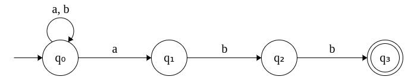

| Prev | Next |
Finite State Machines
Definitions
Finite state machine is an abstract machine that is used to mathematically model computation. It is popularly knows by its acronym: FSM. A FSM is defined by a finite set of states and rules that govern the movement between the states based on inputs, referred to as transitions. More formally,
A finite state machine is a 5-tuple (Q, Σ, δ, q0, F) where
- Q denotes the finite set of states
- Σ represents the alphabet that consists of input symbols
- δ: Q x Σ = Q denotes the transition function the defines the transition from qi to qj Q for each input symbol σ ∈ Σ where qi, qj ∈ Q.
- q0 denotes the start state
- F denotes the set of final states
Given an input sequence, the FSM reads the string of symbols, one at a time, moves between the states as defined by the transition function δ. The string is said to be accepted by the FSM, if at the end of the processing, a final state is reached.
Finite State Machines are modeled as graphs or specified as two-dimensional tables. Graphs are intuitive to humans while tables serve for easy implementation.
In the graphical notation, the start state is represented by an incoming arrow from nowhere. The final states are denoted by a nodes with two circles.
In the tabular notation, the start state is denoted by preceding "->" while the final state is denoted by *.
Types of Finite State Machines
In the automata theory, finite state machines can be categorized as deterministic or non-deterministic.
- δ(q0, abababb)
= δ(q1, bababb)
= δ(q2, ababb)
= δ(q1, babb)
= δ(q2, abb)
= δ(q1, bb)
= δ(q2, b)
= δ(q3, ε)
= q3 [ACCEPT] - δ(q0, abababa)
= δ(q1, bababa)
= δ(q2, ababa)
= δ(q1, baba)
= δ(q2, aba)
= δ(q1, ba)
= δ(q2, a)
= δ(q1, ε)
= q1 [REJECT]
1. Deterministic FSMs, also referred to as Deterministic Finite Automata (DFA) are machines in which transitions between the states are deterministic. i.e. from each state there exists exactly one transition for each input. δ(qi, σ) = qj.
The following diagrams depicts the DFA that accepts all input strings ending with "abb" modeled as graphs. The alphabet Σ is defined as a set of two symbols {a, b}.

The same DFA specified in the form of a table is given below. Both representations are equivalent.
| Input | a | b |
| -> q0 | q1 | q0 |
| q1 | q1 | q2 |
| q2 | q1 | q3 |
| q3* | - | - |
Example 1: Consider the string: abababb. Note that this ends with abb. The DFA can be used to establish this fact by running the string over the DFA. This is shown as follows.
Since, at the end of processing the string, the final state q3, is reached, this string is accepted by the DFA.
Example 2: Consider the string: abababa. Note that this does not end with abb. The DFA can be used to establish this fact by running the string over the DFA. This is shown as follows.
Since, at the end of processing the string, the final state q3, is NOT reached, this string is rejected by the DFA.
2. Non-deterministic FSMs, also referred to as Non-deterministic Finite Automata (NFA) are machines in which transtions between states are not deterministic. i.e. from each state there exists more than one transition for the same input. δ(qi, σ) = {qj1, ..., qjK}.
The following diagram depicts the NFA that accepts all input strings ending with "abb". Σ = {a, b}.
The same NFA specified in the form of a table is given below. Both representations are equivalent.
| Input | a | b |
| -> q0 | {q0, q1} | {q0} |
| q1 | {q1} | {q2} |
| q2 | {q1} | {q3} |
| q3* | φ | φ |
Notice that a transition in an NFA leads to a set of states instead of one state.
In practice, NFAs are easier to construct compared to DFAs due to the extra degree of freedom in defining transitions. However, this doesn't mean NFAs are any more powerful machines than DFAs. An NFA can be converted into a DFA in a mechanical fashion.
Finite State Machines and Regular Languages
DFAs/NFAs accept strings generated by a special class of languages called as Regular Languages. A regular language is a language which can be expressed using Regular Expressions or Regular Grammar.
A regular expression for generating all strings that end with "abb" is given by (a+b)*abb. Here,
- (a+b) denotes either a or b.
- (a+b)* denotes any number and of a's and b's of any combination.
- (a+b)*abb denotes any number and any combination of a's and b's followed by "abb" at the end.
The regular language can be formally defined as: L = { w | w ∈ (a+b)*abb }. Equivalently, the same language can also be defined by the following regular grammar.
- S → aS | bS | aB
- B → bC
- C → b
Languages are usually referred to as generator of strings while the machines are referred to as acceptor of the strings.